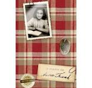

Fontes sobre as informações de Anne Frank:
O livro "O diário de Anne Frank"

O diário de Anne se tornou um livro, que foi publicado pelo seu próprio pai no dia 25 de junho de 1947, que tornou-se uma documentação de guerra.
Foi utilizado informações sobre Anne retiradas do seu site oficial, clica no link abaixo para acessa-lo:
Anne Frank House